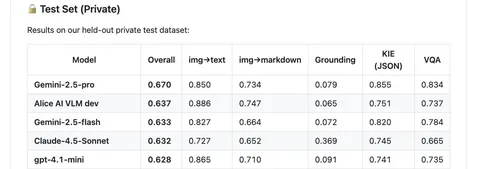

Сегодня наша базовая визуально-языковая модель Alice AI VLM dev появились на втором месте в MWS Vision Bench с результатами Overall private test: 0,637 (img→text: 0,886, img→markdown: 0,747, Grounding: 0,065, KIE (JSON): 0,751, VQA: 0,737). Alice AI VLM dev — часть большой Alice AI VLM. Расскажем, как всё обучалось.
Инженеры Яндекса сумели добиться хороших результатов благодаря обучению модели не только под пользовательские сценарии, но и под бизнесовые. Внутри компании используют VLM для автоматизации документооборота, разметок и многого другого. На этих доменах модель обучается как на стадии претрейна, так и на стадии алайнмента.
В сценарии «картинка + вопрос» качество упирается не только в генерацию ответа, но и в то, как модель видит изображение, читает текст на нём и следует инструкции. В продакшене Alice AI VLM работает в связке: «называтель» извлекает объекты и строит их иерархию с учётом текстового запроса, а VLM‑рефразер маршрутизирует запрос либо в основной VLM‑генератор, либо в специализированные ветки (например, «решатель»), либо в Alice AI LLM. Alice AI VLM dev (она же базовая VLM) — это та же модель, которая работает в продакшене как «генератор» и «решатель», но обрабатывающая запросы пользователя напрямую, без предыдущих этапов.
Обучение VLM двухэтапное: на претрейне мультимодальное next‑token-обучение на большом корпусе, а на алайнменте — SFT + RL, где модель доводят до «ассистентского» поведения.
Претрейн
Увеличили Image‑encoder и размер картинки на входе без деградации — с 896×896 до 1024×1024. Благодаря этому выросло качество работы с деталями, вроде формул, таблиц, этикеток и дорожных знаков.
Также переформатировали OCR‑данные. Раньше в датасете часто встречались пары «картинка + весь распознанный текст», что хорошо помогало учить модель непосредственно на чтение, но этого было недостаточно для некоторых других сценариев. Например для задач на понимание логической и пространственной связи между блоками текста.
Теперь обучают VLM отвечать в разных форматах на OCR-данных: выписывая весь текст самостоятельно, выписывая координаты текста вместе с ним, используя текст внешнего OCR или напрямую отвечая на вопрос пользователя. Такой grounded‑OCR улучшает извлечение таблиц и списков, а также выполнение задач на поиск контента.
Объём претрейна увеличился с 400 миллиардов до 600 миллиардов токенов, а максимальную длину контекста целенаправленно проучили до 32 тысяч. Это позволяет обрабатыватьдлинные документы и несколько изображений в одном запросе.
Алайнмент
Раньше фотоинпут получался через дообучение поверх базовой VLM Яндекса: это давало продуктовые фичи, но обновления базовой модели требовали пересборки датасетов, а по пути могли проседать базовые навыки (OCR, следование некоторым инструкциям).
В последнем релизе сделали «Алису из коробки»: та же базовая VLM стала Alice AI VLM — моделью, отвечающей пользователю. А датасеты и метрики алайнмента объединили так, чтобы одновременно контролировать показатели как «технической» мультимодальности, так и продуктовой.
Отдельно перенесли сетап RL из текстовой Alice AI LLM. Теперь оптимизируют не только правильность, но и полноту, полезность и проактивность ответа. На потоковой корзине SbS новая версия выигрывает у предыдущей в 63% случаев.
Подробнее об обучении нашей VLM — читайте в соответствующем разделе технического отчёта. Там же можно узнать и об изменениях в других моделях семейства.
ML Underhood
